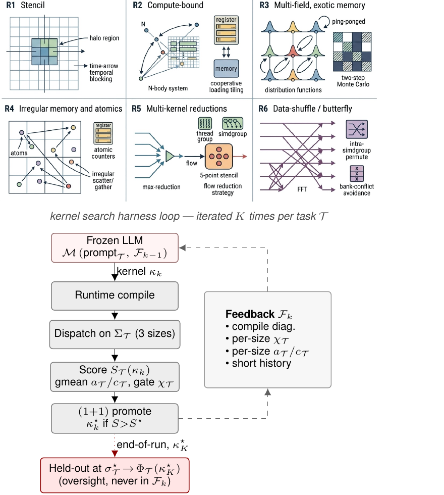
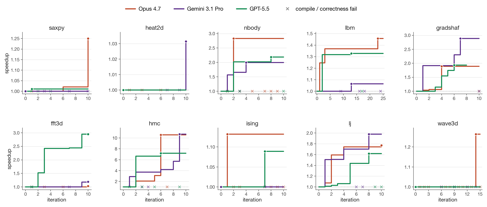

Metal-Sci: A Scientific Compute Benchmark
for Evolutionary LLM Kernel Search on Apple Silicon
1Komorebi AI Technologies, Madrid, Spain. Correspondence to: Víctor Gallego <victor.gallego@komorebi.ai>.
Preprint. May 12, 2026.
Abstract
We present Metal-Sci, a 10-task benchmark of scientific Apple Silicon Metal compute kernels spanning six optimization regimes (stencils, all-pairs in $n$-body problems, multi-field Boltzmann, neighbor-list molecular dynamics, multi-kernel PDE, FFT). Each task ships a CPU reference, a roofline-anchored fitness function, and a held-out generalization size. We pair the benchmark with a lightweight harness for automatic kernel search that runtime-compiles each candidate, scores it against the roofline across multiple sizes, and feeds structured compile and per-size correctness diagnostics back to a frozen LLM driving a $(1{+}1)$ evolutionary loop. We report matched single-model sweeps of Claude Opus 4.7, Gemini 3.1 Pro, and GPT-5.5 on M1 Pro: in-distribution self-speedups span $1.00\times$ to $10.7\times$. Beyond raw speedup, our central methodological claim is structural: the held-out gate scoring function $\Phi_\mathcal{T}$ (evaluated once at end-of-run on a configuration the agent never sees during search) functions as a cheap mechanical oversight primitive on this automatic search loop, catching e.g. an Opus template <uint D> HMC win that returns wrong samples at unseen dimensions, and a GPT FFT3D best that wins in-distribution at $2.95\times$ speedup but collapses to $0.23\times$ on a $256^3$ held-out cube, a silent regression that the in-distribution score alone cannot see. Code at github.com/vicgalle/metal-sci-kernels.
1. Introduction

LLM code-search systems such as FunSearch (Romera-Paredes et al., 2023), AlphaEvolve (Novikov et al., 2025), and recent kernel-generation work (Ouyang et al., 2025) evaluate language models as optimizers of executable artifacts. The choice of artifact matters: KernelBench targets PyTorch ML kernels (GEMM, attention, convolution) on CUDA, where canonical implementations are heavily represented in pretraining data and the optimization surface is dominated by tiling and warp-level reductions.
Scientific computing exposes a different surface. For example, stencils are bandwidth-bound and reward halo and temporal blocking. All-pairs interactions are compute-bound and reward register blocking with shared-memory cooperative loads. Lattice Boltzmann ping-pongs nine distribution functions per cell with non-trivial pull-stream indexing. Cell-list molecular dynamics touches irregular memory through atomic counters. Hamiltonian Monte Carlo runs many chains in parallel where register pressure scales with the problem dimension $d$. Grad-Shafranov solvers chain a max-reduction with a variable-coefficient stencil. And 3D FFTs are dominated by data-shuffle/butterfly patterns and twiddle-factor caching rather than tiling. Each pattern stresses a distinct dimension of the compiler/memory hierarchy, and canonical optimizations (Datta et al., 2008; Nyland et al., 2007; Schönherr et al., 2011; Anderson et al., 2008; Govindaraju et al., 2008) differ regime-to-regime.
We target the Apple Silicon's Metal compute pipeline. It is underrepresented in CUDA-centric training data, as frontier models reliably mishandle Metal-specific syntax such as the [[max_total_threads_per_threadgroup]] kernel attribute, a simple out-of-distribution generalization test. Its unified memory model removes host-device copy plumbing, enabling sub-second compile-run-verify cycles per candidate that are essential for fast evolutionary loops. And it supports rich simdgroup intrinsics (simd_max, simd_broadcast) and threadgroup-memory tiling, giving the LLM a non-trivial optimization surface.
Contributions. (i) A 10-task scientific compute benchmark over six optimization regimes, each with a CPU reference, roofline-anchored fitness function, and multi-size generalization gate; (ii) a runtime-compiled harness that exposes compile errors, correctness diagnostics, and per-size GPU timing back to the LLM; and (iii) three matched single-model sweeps (Claude Opus 4.7, Gemini 3.1 Pro, and GPT-5.5) on M1 Pro that operationalize the held-out gate $\Phi_\mathcal{T}$ as a cheap mechanical oversight primitive on the coding agent: $\Phi_\mathcal{T}$ is never folded into any feedback packet seen by the LLM during search and catches confidently-wrong outputs (silent correctness violations and silent regressions) that the in-distribution score $S_\mathcal{T}$ alone licenses.
Related work. Existing LLM kernel-generation benchmarks, such as KernelBench (Ouyang et al., 2025), TritonBench (Li et al., 2025), BackendBench (Saroufim et al., 2025), MultiKernelBench (Wen et al., 2025), NPUEval (Kalade & Schelle, 2025) and KernelCraft (Nie et al., 2026), target ML operators on CUDA or accelerator backends and score speedup against a vendor or compiler baseline (Table 1). Metal-Sci differs on three axes that drive the harness design: (i) scientific compute spanning six structurally distinct optimization regimes (R1–R6, Sec. 2) whose canonical recipes (Datta et al., 2008; Nyland et al., 2007; Schönherr et al., 2011; Anderson et al., 2008; Govindaraju et al., 2008) do not transfer between regimes; (ii) a per-chip roofline score (decoupled from any reference implementation) with a held-out size configuration gate $\Phi_\mathcal{T}$ the agent never sees during search; and (iii) Apple Silicon Metal, which is structurally underrepresented in CUDA-centric pretraining and a real OOD test on Metal-grammar idioms ([[max_total_threads_per_threadgroup]] attribute placement, half as a reserved fp16 keyword, no C++ lambdas). The broader paradigm of LLMs as optimizers in evolutionary code search is established by FunSearch (Romera-Paredes et al., 2023) and AlphaEvolve (Novikov et al., 2025) and specialised to CUDA ML kernels by AI CUDA Engineer (Lange et al., 2025) and EvoEngineer (Guo et al., 2025); App. D expands this related work.
Background and vocabulary. Apple GPU terms. A kernel is a .metal-source GPU function launched from the CPU; a threadgroup (TG) is Apple's name for a CUDA thread block: cooperating threads sharing a scratchpad “threadgroup memory”; a simdgroup is the 32-thread SIMD lane group inside a threadgroup (Apple's name for a CUDA warp); the System-Level Cache (SLC) is the CPU/GPU-shared last-level cache ($\sim24$ MB on M1 Pro) sitting between the on-chip caches and DRAM. Roofline. A kernel's roofline (Williams et al., 2009) ceiling is the per-chip throughput upper bound implied by its arithmetic intensity (FLOPs per byte transferred). Kernels with low intensity are bandwidth-bound and cap at peak DRAM bandwidth (GB/s); high-intensity ones are compute-bound and cap at peak FP32 throughput (GFLOPS). We score candidates as a fraction of this hardware ceiling rather than against any hand-written baseline. Evolution strategy $(\mu{=}1{+}\lambda{=}1)$, also called $(1{+}1)$ (Beyer & Schwefel, 2002), denotes the simplest evolution strategy: one parent, one mutated child per iteration; the child replaces the parent iff it scores higher.
2. Benchmark tasks
saxpy is a bandwidth smoke-test outside the regime structure, used to validate the harness.| Regime | Task | Optimization lever | In-distribution size configurations | Held-out |
|---|---|---|---|---|
| R1 stencil | heat2d | halo, temporal blocking | $\{256,512,1024\}^2$ | $768^2$ |
wave3d | 2.5D blocking, register pressure | $\{64,160,192\}^3$ | $128^3$ | |
| R2 compute | nbody | register tiling, threadgroup cooperative load | $N{\in}\{256,1024,2048\}$ | $512$ |
hmc | per-thread state vs. register file | $(d{,}K){\in}\{(8{,}16K){,}(16{,}4K){,}(32{,}1K)\}$ | $(24{,}2K)$ | |
| R3 multi-field | lbm | SoA layout, BGK algebraic fold | $\{64,128,256\}^2$ | $192^2$ |
ising | checkerboard MC, byte-exact verify | $\{256,1024,2048\}^2$ | $1536^2$ | |
| R4 atomics | lj | cell-list scatter, atomic contention | $N{\in}\{1.7,4.1,10.6\}{\rm K}$ | $2744$ |
| R5 multi-kernel | gradshaf | in-kernel reduction + var-coef stencil | $\{65,257,513\}^2$ | $129^2$ |
| R6 butterfly | fft3d | TG bank conflicts, mixed-radix, simd_shuffle | $\{32,64,128\}^3$ | $256^3$ |
| (smoke) | saxpy | DRAM saturation | $\{1,16,64\}{\rm M}$ | $4{\rm M}$ |
Metal-Sci packages 10 tasks into six optimization regimes (R1–R6, Fig. 1 top, Table 2). The choice of regimes is the benchmark's central design decision: each regime stresses a structurally distinct dimension of the GPU/memory hierarchy, and its canonical recipe (Datta et al., 2008; Nyland et al., 2007; Schönherr et al., 2011; Anderson et al., 2008; Govindaraju et al., 2008) does not transfer to its neighbours. A halo-blocking move that wins R1 is useless on R2 (register tiling), R4 (atomic contention), or R6 (intra-simdgroup butterflies). For an LLM, this is the structural reason recall alone cannot solve the suite: there is no template that wins everywhere, so the model has to actually recognise the regime from the kernel seed and reach for the right lever.
Each task ships (a) a Metal seed kernel, (b) a CPU reference with task-specific tolerance, to check correctness, (c) three in-distribution size configurations plus one held-out size configuration, and (d) a per-size roofline ceiling in GFLOPS (compute-bound) or GB/s (bandwidth-bound). Per-task equations, ceilings, and verification details are deferred to App. A; below we name the lever each regime tests.
R1 — Regular stencils. Bandwidth-bound updates over a structured grid: a 5-point heat-equation stencil (8 B/cell) and a 7-point leapfrog wave equation (12 B/cell). The lever is halo handling, marching-axis choice, and 2.5D temporal blocking. wave3d doubles as a NaN trap, that is, a sign or indexing error compounds over many leapfrog steps (e.g. 10 of Opus's 13 correctness fails in Sec. 4 land here).
R2 — Compute-bound. $O(N^2)$ pair sums from $n$-body simulations (nbody) and $O(d^2)$ matvec inside an $L$-step leapfrog integration (hmc), both running $\sim20$ FLOPs per memory transaction so the ceiling is peak FP32 GFLOPS. The lever is register tiling and threadgroup cooperative loads. hmc additionally probes the register-pressure boundary and verifies correctness statistically (sample mean and Frobenius covariance error vs. the target Gaussian).
R3 — Multi-field, exotic memory. lbm is a D2Q9 Lattice Boltzmann (pull-stream + BGK collision) with nine distribution fields per cell at 72 B/cell traffic; the lever is SoA layout, push/pull streaming choice, and algebraic factorisations of the BGK relaxation (App. C dissects an FMA fold Opus discovered). ising is 2D Ising checkerboard Metropolis Monte Carlo at 2 B/site; a precomputed accept-probability table and a counter-based Murmur-fmix32 PRNG yield bit-exact CPU/GPU agreement, so verification reduces to byte-equality on the spin array.
R4 — Irregular memory and atomics. Lennard-Jones molecular dynamics with a cell-list spatial hash. Three kernels per step (clear_cells / build_cells / step); build_cells is an atomic scatter onto per-cell occupancy counters and the force kernel walks 27 neighbor cells with minimum-image periodic wrap. The lever is load balancing under uneven cell occupancy and atomic-contention mitigation.
R5 — Multi-kernel reductions. Picard iteration for the Grad-Shafranov fixed-boundary plasma equilibrium. Each outer step dispatches a max-reduction followed by a variable-coefficient 5-point stencil with a nonlinear source. The lever is the choice of in-kernel reduction strategy (single-threadgroup vs. simdgroup-tree) and how cleanly the two kernels compose across the dispatch boundary.
R6 — Data-shuffle / butterfly. 3D complex-to-complex forward Fast Fourier Transform (FFT), dispatched as three per-axis 1D FFTs with two ping-ponged buffers. Unlike R1/R2, the optimization surface is data movement rather than arithmetic: bit-reversal vs. Stockham auto-sort, twiddle-factor caching, mixed-radix (radix-4, radix-8) butterflies for fewer barriers, and intra-simdgroup permutes via simd_shuffle_xor. The per-axis stride asymmetry (stride 1 along $x$ vs. $N$/$N^2$ along $y,z$) makes threadgroup-memory bank-conflict avoidance a separate sub-lever.
3. Harness Design
The harness we propose closes an evolutionary loop (Fig. 1 bottom) around a frozen LLM: each iteration runtime-compiles a candidate Metal source, dispatches it across the task's in-distribution size configurations, scores the result against the per-chip roofline, and packs compile diagnostics, per-size correctness, and per-size throughput into a structured feedback packet $\mathcal{F}_k$ that primes the next iteration. We adopt two design choices: (i) runtime compilation inside a Python process, so each $(1{+}1)$ step costs seconds rather than minutes and the agent can iterate on the same kernel dozens of times per task; and (ii) a held-out score $\Phi_{\mathcal{T}}$ at an unseen size configuration, computed once at end-of-run and never folded into any $\mathcal{F}_k$ the LLM sees during search, to also test for generalization.
Compile and dispatch. The harness uses PyObjC's Metal bindings and runtime-compiles .metal source via MTLDevice.newLibraryWithSource, avoiding the offline xcrun metal toolchain; compile errors are returned as structured strings to the LLM. Buffers are allocated in unified memory. All dispatches for a multi-size run share one MTLCommandBuffer, and timings come from GPUEndTime $-$ GPUStartTime (3 warmup, 10 timed, median reported). The chip is detected from sysctl and looked up in a per-family table (M1 through M4) for peak FP32 GFLOPS and DRAM bandwidth.
Notation. Each task ships a seed kernel $\kappa_{\mathcal{T}}$ (Metal source), three in-distribution size configurations $\Sigma_{\mathcal{T}}{=}\{\sigma_1,\sigma_2,\sigma_3\}$, a held-out size $\sigma^{\star}_{\mathcal{T}}{\notin}\Sigma_{\mathcal{T}}$, and a per-size roofline $c_{\mathcal{T}}(\sigma)$ in GFLOPS or GB/s. Evaluating a candidate $\kappa$ at size config $\sigma$ produces a correctness flag $\chi_{\mathcal{T}}(\kappa,\sigma){\in}\{0,1\}$ (CPU reference within tolerance or not) and an achieved throughput $a_{\mathcal{T}}(\kappa,\sigma)$; denote $f_{\mathcal{T}}(\kappa,\sigma){=}a_{\mathcal{T}}(\kappa,\sigma)/c_{\mathcal{T}}(\sigma)$ for the per-size fraction-of-ceiling.
Scoring. The in-distribution score is the geometric mean of $f_{\mathcal{T}}$ over in-distribution size configurations, gated on correctness on every size:
The hard gate ($S_{\mathcal{T}}{=}0$ on any tolerance failure) prevents trading correctness for speed; the gmean across sizes discourages overfit to one regime. The held-out gate, run only on the run's incumbent at end-of-run, is the analogous quantity at the unseen size configuration: $\Phi_{\mathcal{T}}(\kappa){=}f_{\mathcal{T}}(\kappa,\sigma^{\star}_{\mathcal{T}}){\cdot}\chi_{\mathcal{T}}(\kappa,\sigma^{\star}_{\mathcal{T}})$. $S_{\mathcal{T}}$ is the agent's optimization target; $\Phi_{\mathcal{T}}$ is the external oversight signal it never sees.
Evolution loop. A frozen LLM $\mathcal{M}$ acts as a kernel synthesizer: given a task-spec system prompt $p_{\mathcal{T}}$ and a feedback packet $\mathcal{F}_k$ summarizing the previous candidate, the incumbent, and a short per-iteration history, $\mathcal{M}$ emits the next Metal source $\kappa_{k+1}$ (with $\kappa_0{=}\kappa_{\mathcal{T}}$). The harness compiles it, dispatches across $\Sigma_{\mathcal{T}}$, and scores it; the strict $(1{+}1)$ rule replaces the incumbent only when the new candidate scores strictly higher under $S_{\mathcal{T}}$. We formalize this compile–evaluate–promote $(1{+}1)$ loop in Alg. 1 (App. B). Compile, pipeline, and per-size correctness errors are returned inside $\mathcal{F}_{k+1}$ as structured strings (the violating size, the error metric and value, and the compiler diagnostic if any). After $K$ iterations the run terminates; both $S_{\mathcal{T}}(\kappa^{\star}_K)$ and the held-out $\Phi_{\mathcal{T}}(\kappa^{\star}_K)$ are reported.
| Task | In-dist. $\times$ | Held-out frac-of-ceiling | Held-out $\times$ | Outcome | ||||||
|---|---|---|---|---|---|---|---|---|---|---|
| Opus | Gemini | GPT | Opus | Gemini | GPT | Opus | Gemini | GPT | ||
saxpy | 1.25 | 1.00 | 1.01 | 93% | 78% | 78% | 1.17 | 0.98 | 0.98 | saturated |
heat2d | 1.00 | 1.03 | 1.00 | 84% | 98% | 80% | 0.86 | 1.01 | 0.82 | saturated |
wave3d | 1.26 | 1.00 | 1.00 | 97% | 87% | 96% | 1.00 | 0.90 | 0.99 | saturated |
ising | 1.13 | 1.00 | 1.09 | 11% | 12% | 10% | 0.94 | 0.99 | 0.88 | flat |
fft3d | 1.03 | 1.19 | 2.95 | 42% | 45% | 8.5% | 1.12 | 1.20 | 0.23 | GPT silent regression |
nbody | 2.83 | 2.00 | 2.19 | 1.6% | 2.0% | 1.8% | 1.24 | 1.50 | 1.37 | generalizes |
gradshaf | 1.89 | 2.89 | 1.93 | 5.4% | 7.7% | 5.0% | 2.05 | 2.91 | 1.86 | generalizes |
lj | 1.77 | 1.98 | 1.62 | 0.31% | 0.47% | 0.34% | 1.24 | 1.87 | 1.34 | generalizes |
lbm | 1.46 | 1.06 | 1.33 | 79% | 93% | 82% | 0.97 | 1.16 | 1.01 | tied at $192^2$ |
hmc | 10.6 | 10.7 | 7.19 | — | 9.7% | 10.2% | FAIL | 17.6 | 18.6 | Opus wrong at $d{=}24$; Gemini, GPT generalize |
4. Experiments

x along $y{=}1$ is a candidate that compiled or ran wrong (the incumbent is unchanged). The visible counts make the silent-correctness story concrete: Opus emits more failures than Gemini or GPT at every task with non-trivial search (nbody, hmc, ising, lj, wave3d). The plot also justifies the asymmetric per-task budgets: on most tasks (saxpy, heat2d, nbody, gradshaf, hmc, ising, lj) the incumbent stops moving by iter $\sim$8 for all three models, but lbm's Opus run plateaus at $1.36\times$ from iter 3 through iter 22 and only breaks through to $1.46\times$ at iter 23 (the BGK fold + pinned threadgroup of App. C); wave3d's Opus run shows the same shape with the lift at iter 14 ($1.26\times$). A 10-iter budget would have missed both Opus exemplars. GPT's fft3d climbs monotonically to $2.95\times$, and is exactly the win that fails to generalize on the held-out gate.iter 5 — manual unroll// iter 5: runtime d, D_MAX=32 layout for (uint i=0; i<d; ++i) { float4 acc = Arow[0] * q4[0]; acc = fma(Arow[1], q4[1], acc); /* ... 6 more, always 8 ... */ acc = fma(Arow[7], q4[7], acc); f[i] = acc.x+acc.y+acc.z+acc.w; } // d=8: 121 GFLOPS (2.7% of peak)
<uint D>compile-time D8.0×
iter 6 — templated// iter 6: template <uint D> template <uint D> inline void run(...) { float q[D], p[D], f[D]; #pragma unroll for (uint i=0; i<D; ++i) { float acc = 0.0f; #pragma unroll for (uint j=0; j<D; ++j) acc = fma(A[i*D+j], q[j], acc); f[i] = acc; } } if (d==8u) run<8u>(...); else if (d==16u) run<16u>(...); else run<32u>(...); // d=8: 970 GFLOPS (22% of peak)
hmc, Opus 4.7, iter 5 $\rightarrow$ 6. Both Opus and Gemini independently arrive at this structural change. The lever is one declaration: template <uint D> with runtime-dispatched instantiations on $d$. Iter 5 had a manually-unrolled float4 inner loop against a fixed $D_{\max}{=}32$ layout (over-computing at $d{=}8$, plus a 4-way horizontal sum); iter 6 sizes q,p,f exactly to $D$ so both loops fully unroll into scalar FMAs — moving $d{=}8$ from 121 to 970 GFLOPS in one iteration after five had stalled at 2–4% of peak. Opus enumerated $D{\in}\{8,16,32\}$ and broke correctness at the held-out $d{=}24$; Gemini kept a runtime-$d$ fallback and generalized cleanly.We run three matched single-model sweeps on Apple M1 Pro (4500 GFLOPS, 200 GB/s) — Claude Opus 4.7, Gemini 3.1 Pro, and GPT-5.5 — over the ten tasks at the same per-task iteration budget (10 each except lbm at 25 and wave3d at 151), $\mu{=}1{+}\lambda{=}1$, no human prompt intervention. Table 3 reports each model's in-distribution self-speedup (best / seed, gmean over three in-distribution size configuration) and a held-out evaluation in which the unmodified seed and each incumbent best are run on a single unseen problem size configuration declared by the task spec (Sec. 2). The held-out columns are remeasured in a single fresh session for all three models so the absolute fraction-of-ceiling numbers stay apples-to-apples; we observed that single-size held-out fractions can shift by tens of percentage points across sessions due to GPU thermal state and SLC residency, so we anchor on the within-session ratios.
In-distribution results. Self-speedups span $1.00\times$ to $10.7\times$. The hmc step (Fig. 3) is the high end for Opus-4.7 and Gemini-3.1-Pro: each independently introduces a template <uint D> worker dispatched on runtime $d$ that takes $d{=}8$ from $\sim$120 to $\sim$970 GFLOPS by enabling full unroll of the inner $A\,q$ matvec, and the two top scores agree to within 1.4% (Opus 0.0932 vs Gemini 0.0870); GPT-5.5 reaches the same regime more cautiously at $7.2\times$ (GPT 0.0634). Outside hmc the models split: Opus wins on saxpy ($1.25$), nbody ($2.83$), lbm ($1.46$), and wave3d ($1.26$); Gemini wins on gradshaf ($2.89$) and lj ($1.98$); GPT wins fft3d outright at $2.95\times$ (vs $1.19$ Gemini, $1.03$ Opus), the largest in-distribution gap any single model opens on the suite, and is competitive on nbody ($2.19$), gradshaf ($1.93$), ising ($1.09$), and lbm ($1.33$). The Opus–Gemini split correlates with the type of optimization lever: “tune the same algorithm tighter” (BW saturation, BGK fold, leapfrog ILP) favors Opus, while “find a different algorithm” (simdgroup-tree reduction, twiddle caching, neighbor-list reorganization) favors Gemini (see App. C for code-level diffs on lbm and fft3d, plus GPT's fft3d direct-DFT fallback and hmc defensive enumeration). GPT sits closer to Gemini in temperament: it explores aggressive restructurings, which on fft3d pays off in-distribution but, as the held-out column makes visible, at the cost of a sharp overfit (see next paragraph). Saturated tasks (saxpy, heat2d, wave3d) sit above 78% of effective DRAM ceiling on the seed; saxpy and heat2d primarily validate the harness, leaving the search loop little to do, and heat2d shows the score is a hard signal: on both Opus and GPT zero candidates strictly dominated the seed across all three sizes and the incumbent stayed at iter 0. Across all three sweeps, Gemini had zero correctness failures across all its candidates; Opus had 13 (notably wave3d 10/15: multi-step leapfrog amplifies any sign or indexing error into NaN); GPT had 2 across all candidates, the second-lowest correctness-failure rate of the three.
Held-out generalization is sharper than in-distribution, and the three models overfit asymmetrically. We distinguish two main result populations. (i) Generalizes: nbody, gradshaf, lj, and (for Opus and Gemini) fft3d. gradshaf is the standout where all three models extrapolate cleanly ($2.05\times$ Opus, $2.91\times$ Gemini, $1.86\times$ GPT); on lj only Gemini exceeds its in-distribution speedup ($1.87\times$ at $N{=}2744$); Opus and GPT hold partial gains ($1.24\times$ and $1.34\times$ respectively). (ii) Overfits, with the most consequential disagreements between the three models. hmc is the sharpest correctness case: Opus's template specialization dispatches if (d==8) run<8>() ... else run<32>(), so $d{=}24$ lands in the $D{=}32$ branch, per-thread q[32], p[32] and the unrolled matvec process 32 entries against 24-entry data, and sample covariance lands $\sim 10\sigma$ off target. Gemini pairs the template-$D$ speedup with a runtime-$d$ leapfrog fallback; GPT goes one step further and enumerates D∈{8,16,24,32} explicitly (App. C), covering the held-out dimension with its own fully-unrolled template instance and a runtime-$d$ safety net for any other $d$. Both generalize to $d{=}24$ at $\sim$10% of FP32 peak ($17.6\times$ Gemini, $18.6\times$ GPT). fft3d is the sharpest performance case for GPT-5.5: its iter-10 best wins the in-distribution gmean at $2.95\times$ but on the held-out $256^3$ cube it collapses to $0.23\times$ of seed ($8.5\%$ of effective ceiling vs Opus's $42\%$ and Gemini's $45\%$ on the same configuration). The kernel relies on a fixed-twiddle, fixed-geometry layout tuned for $N{\leq}128$; at $N{=}256$ the register pressure and tg-memory budget no longer fit, and the fallback path is dramatically slower than the seed's textbook Stockham. This is the cleanest silent-regression instance in the sweep: $S_\mathcal{T}$ alone allows a $2.95\times$ win, $\Phi_\mathcal{T}$ surfaces a $0.23\times$ deployment-grade slowdown. GPT is never strictly worse than Opus on held-out correctness (both clean except Opus's hmc fail) and on generalization falls between Opus and Gemini on most tasks, but its fft3d collapse is the largest single held-out swing in the table and exemplifies the oversight value of $\Phi_\mathcal{T}$.
dispatch in fft3d_x// Dispatch in fft3d_x kernel threadgroup float2 buf0[128]; threadgroup float2 buf1[128]; if (N == 32u) fft_line_32_io(...); else if (N == 64u) fft_line_64_io(..., buf0); else if (N == 128u) fft_line_128_io(..., buf0, buf1); else { fft_line_direct_fallback_io(...); }
lands here$O(N^2)$ fallback0.23×
direct-DFT fallback// fft_line_direct_fallback_io: O(N²) DFT float2 acc = float2(0.0f, 0.0f); float theta = -TWO_PI * float(tid) / float(N); float2 wstep = float2(cos(theta), sin(theta)); float2 w = float2(1.0f, 0.0f); for (uint n = 0u; n < N; ++n) { float2 v = in_data[in_base + n*in_stride]; acc += cmul(v, w); w = cmul(w, wstep); } out_data[out_base + tid * out_stride] = acc;
fft3d iter-10 best: hand-coded fft_line_32/64/128 routines (left dispatch) deliver the $2.95\times$ in-distribution self-speedup; for any $N$ outside $\{32, 64, 128\}$ the kernel falls into a textbook direct $O(N^{2})$ DFT (right). At held-out $N{=}256$ this costs $\sim 32\times$ more arithmetic per output than the seed's $O(N\log N)$ Stockham FFT, producing the $0.23\times$ held-out slowdown reported in Table 3. The fast paths reuse a 64-entry constant float2 W128[] twiddle table whose stride indexing only covers $N{\leq}128$, the structural reason the fallback is direct DFT rather than a longer FFT.Recurring Metal-grammar failures and generation times. Compile-error patterns are similar across the three models. [[max_total_threads_per_threadgroup(N)]] is mis-placed (after the parameter list, or as a standalone statement, instead of on the kernel void declaration) on Opus across five tasks and GPT hits the same attribute placement error on its first saxpy iteration. half is reserved as MSL's fp16 type, breaking uint half = N >> 1u;; C++ lambdas are unsupported. The three sweeps differ in volume rather than kind: $12$ compile fails for Opus, $22$ for Gemini, $12$ for GPT. Though we configured each LLM to use high thinking budgets, the observed generation times per iteration were very varied: Opus 0.6 min/iter, Gemini 3.5 min/iter, GPT 6.6 min/iter; GPT's wider exploration and longer reasoning context costs roughly $2\times$ Gemini and $10\times$ Opus per iteration at matched budget.
5. Discussion
We have introduced Metal-Sci, a 10-task scientific compute benchmark for Apple Silicon Metal, paired with a lightweight evolutionary harness that runtime-compiles, scores against a roofline anchor, and feeds structured diagnostics back to a frozen LLM. Across matched $(1{+}1)$ sweeps of three frontier models we measure in-distribution self-speedups spanning $1.00\times$ to $10.7\times$, and find that each model fails the held-out gate $\Phi_\mathcal{T}$ in a different shape: Opus-4.7 loses correctness, GPT-5.5 loses performance, Gemini-3.1-Pro stays robust at higher wall-clock cost. The headline contribution is therefore not a single number but a methodological one: a single auxiliary configuration per task, withheld from the agent's feedback loop, is enough to catch confidently-wrong code that the in-distribution score certifies as a win.
The held-out gate as agent oversight. The benchmark's $(1{+}1)$ loop is, modulo terminology, an autonomous coding agent: it reads a Metal source, edits it, runs it, and self-promotes its own outputs based on an internal fitness signal. A human merging the agent's incumbent into a downstream codebase sees only the in-distribution score $S_\mathcal{T}$ the agent reports, and $S_\mathcal{T}$ is gameable in two ways the held-out gate $\Phi_\mathcal{T}$ (Sec. 3) catches. (i) Silent correctness violation. On hmc, Opus's incumbent hits $10.6\times$ with all in-distribution checks green; held out at $d{=}24$ the same code returns samples whose covariance is off by $\sim 10\sigma$. A user who trusted the reported number would ship a sampler that looks calibrated and isn't. (ii) Silent regression. On fft3d GPT-5.5 reports an in-distribution win of $2.95\times$ (the largest single-model in-distribution gap in our sweep) that flips to a $0.23\times$ slowdown at the held-out $256^3$ cube (the one configuration past the largest training size $128^3$). The cause is a single dispatch line (Fig. 4): when $N\notin\{32,64,128\}$ the kernel falls into a textbook $O(N^{2})$ direct DFT, so $N{=}256$ pays $\sim 32\times$ more arithmetic per output than the seed's Stockham FFT. The agent confidently labels its iter-10 output as a $\sim 3\times$ improvement over the seed; the held-out gate shows it is $4\times$ slower in deployment. Both failures share a structural shape: the agent specialized against the visible workload. A single auxiliary problem instance per task (one extra dispatch, seconds of GPU time) is enough to surface both. This reframes the contribution toward the community's verifiability/oversight agenda: Metal-Sci's value lies less in providing a hard benchmark and more in instantiating a cheap, mechanical trust contract on top of an autonomous coding agent. The roofline anchor, per-size tolerance, and geometric mean inside $S_\mathcal{T}$ are the agent's scoring machinery; $\Phi_\mathcal{T}$ (evaluated once on $\sigma^\star_\mathcal{T}$ at end-of-run, never folded into any feedback packet $\mathcal{F}_k$) is the lightweight oversight primitive that lets a human (or a downstream automated reviewer) catch confidently-wrong agent code before deployment.
Other observations. A roofline-anchored score answers “how close are we to the hardware?” in physical units; the gmean across sizes is hard to game by overfitting one regime. The three-model asymmetry is concrete: at matched iteration budgets the in-distribution scores are close, but each model fails the held-out gate in a different shape. Opus loses correctness at hmc $d{=}24$, GPT loses performance at fft3d $256^3$, and Gemini, the only model with zero correctness failures across the entire candidate budget and no held-out collapse beyond a borderline $0.90\times$ on wave3d, is the most robust of the three. Wall time orders the other way: Opus is $\sim 10\times$ faster per iteration than GPT and $\sim 6\times$ faster than Gemini at matched budgets, which makes Opus the cheapest run when in-distribution speedup is the only deliverable, and Gemini/GPT the safer choice when the output ships across configurations the in-distribution set did not cover. Apple Silicon's unified memory halves the host-side scaffolding compared to CUDA, enabling sub-second compile-run-verify cycles per candidate. This matters more than it sounds: an evolutionary loop with tens of candidates needs a fast harness, not a fast kernel. Metal's smaller, quirkier surface also surfaces OOD failures of CUDA-trained LLMs on tasks that are otherwise textbook.
Limitations and future work. The static per-chip ceilings do not account for SLC residency at small sizes; a workload-aware roofline (Williams et al., 2009) per task and per size would tighten the score. The single-population $(1{+}1)$ loop plateaus within 10–25 iterations on most tasks, an island-model or FunSearch-style (Romera-Paredes et al., 2023) archive with a novelty signal (Novikov et al., 2025) is the natural next step, particularly for the irregular-memory tasks. Future tasks include sparse linear algebra (SpMV, CG) and cross-chip generalization (evolve on M2 Pro, evaluate on M4 Max).
References
- Anderson, J. A., Lorenz, C. D., and Travesset, A. General purpose molecular dynamics simulations fully implemented on graphics processing units. Journal of computational physics, 227(10):5342–5359, 2008.
- Beyer, H.-G. and Schwefel, H.-P. Evolution strategies – a comprehensive introduction. Natural Computing, 1(1):3–52, 2002.
- Datta, K., Murphy, M., Volkov, V., Williams, S., Carter, J., Oliker, L., Patterson, D., Shalf, J., and Yelick, K. Stencil computation optimization and auto-tuning on state-of-the-art multicore architectures. In Proceedings of the 2008 ACM/IEEE Conference on Supercomputing, SC '08. IEEE Press, 2008. ISBN 9781424428359.
- Gallego, V. Cooperation and exploitation in LLM policy synthesis for sequential social dilemmas. arXiv preprint arXiv:2603.19453, 2026.
- Govindaraju, N. K., Lloyd, B., Dotsenko, Y., Smith, B., and Manferdelli, J. High performance discrete fourier transforms on graphics processors. SC, 8:1–12, 2008.
- Guo, P., Zhu, C., Chen, S., Liu, F., Lin, X., Lu, Z., and Zhang, Q. Evoengineer: Mastering automated cuda kernel code evolution with large language models. arXiv preprint arXiv:2510.03760, 2025.
- Kalade, S. and Schelle, G. NPUeval: Optimizing npu kernels with llms and open source compilers. arXiv preprint arXiv:2507.14403, 2025.
- Karpathy, A. autoresearch: AI agents running research on single-GPU nanochat training automatically. https://github.com/karpathy/autoresearch, 2026.
- Lange, R. T., Sun, Q., Prasad, A., Faldor, M., Tang, Y., and Ha, D. Towards robust agentic cuda kernel benchmarking, verification, and optimization. arXiv preprint arXiv:2509.14279, 2025.
- Li, J., Li, S., Gao, Z., Shi, Q., Li, Y., Wang, Z., Huang, J., WangHaojie, Wang, J., Han, X., et al. Tritonbench: Benchmarking large language model capabilities for generating triton operators. In Findings of the Association for Computational Linguistics: ACL 2025, pp. 23053–23066, 2025.
- Ma, Y. J., Liang, W., Wang, G., Huang, D.-A., Bastani, O., Jayaraman, D., Zhu, Y., Fan, L., and Anandkumar, A. Eureka: Human-level reward design via coding large language models. In The Twelfth International Conference on Learning Representations, 2024.
- Nie, J., Wu, H., Lai, Y., Cao, Z., Zhang, C., Lou, B., Wang, E., Cheng, J., Jones, T. M., Mullins, R., et al. Kernelcraft: Benchmarking for agentic close-to-metal kernel generation on emerging hardware. arXiv preprint arXiv:2603.08721, 2026.
- Novikov, A., Vũ, N., Eisenberger, M., Dupont, E., Huang, P.-S., Wagner, A. Z., Shirobokov, S., Kozlovskii, B., Ruiz, F. J., Mehrabian, A., et al. Alphaevolve: A coding agent for scientific and algorithmic discovery. arXiv preprint arXiv:2506.13131, 2025.
- Nyland, L., Harris, M., and Prins, J. Fast n-body simulation with cuda. gpu gems 3, 2007.
- Ouyang, A., Guo, S., Arora, S., Zhang, A. L., Hu, W., Re, C., and Mirhoseini, A. Kernelbench: Can LLMs write efficient GPU kernels? In Forty-second International Conference on Machine Learning, 2025. https://openreview.net/forum?id=yeoN1iQT1x.
- Romera-Paredes, B., Barekatain, M., Novikov, A., Balog, M., Kumar, M. P., Dupont, E., Ruiz, F. J. R., Ellenberg, J., Wang, P., Fawzi, O., Kohli, P., and Fawzi, A. Mathematical discoveries from program search with large language models. Nature, 2023. doi: 10.1038/s41586-023-06924-6.
- Saroufim, M., Wang, J., Maher, B., Paliskara, S., Wang, L., Sefati, S., and Candales, M. Backendbench: An evaluation suite for testing how well llms and humans can write pytorch backends, 2025. URL https://github.com/meta-pytorch/BackendBench.
- Schönherr, M., Kucher, K., Geier, M., Stiebler, M., Freudiger, S., and Krafczyk, M. Multi-thread implementations of the lattice boltzmann method on non-uniform grids for cpus and gpus. Computers & Mathematics with Applications, 61(12):3730–3743, 2011.
- Shinn, N., Cassano, F., Gopinath, A., Narasimhan, K., and Yao, S. Reflexion: language agents with verbal reinforcement learning. In Advances in Neural Information Processing Systems, 2023.
- Wang, G., Xie, Y., Jiang, Y., Mandlekar, A., Xiao, C., Zhu, Y., Fan, L., and Anandkumar, A. Voyager: An open-ended embodied agent with large language models. Transactions on Machine Learning Research, 2024.
- Wen, Z., Zhang, Y., Li, Z., Liu, Z., Xie, L., and Zhang, T. Multikernelbench: A multi-platform benchmark for kernel generation. arXiv e-prints, pp. arXiv–2507, 2025.
- Williams, S., Waterman, A., and Patterson, D. Roofline: an insightful visual performance model for multicore architectures. Communications of the ACM, 52(4):65–76, 2009.
- Yang, C., Wang, X., Lu, Y., Liu, H., Le, Q. V., Zhou, D., and Chen, X. Large language models as optimizers. In The Twelfth International Conference on Learning Representations, 2024.
- Ye, H., Wang, J., Cao, Z., Berto, F., Hua, C., Kim, H., Park, J., and Song, G. ReEvo: Large language models as hyper-heuristics with reflective evolution. In Advances in Neural Information Processing Systems, 2024.
A. Task formulations
This appendix gives the per-task equations, ceilings, and tolerances summarised in Section 2. Tasks are grouped by the regimes R1–R6 of Table 2; training and held-out sizes match the table.
A.1. R1: Regular stencils
heat2d. Two-dimensional heat equation, 5-point stencil on $(N_x{\times}N_y)$ grid with Dirichlet boundaries. Per timestep, per interior cell:
Bandwidth-bound at 8 B/cell.
wave3d. Three-dimensional acoustic wave equation, 7-point isotropic Laplacian, leapfrog in time:
where each $\pm$ expands to two terms. CFL stability requires $\alpha=(c\Delta t/\Delta x)^2<1/3$ (we use $0.18$). 12 B/cell unique DRAM traffic.
A.2. R2: Compute-bound
nbody. All-pairs gravitational $N$-body with leapfrog integration. Per body $i$ per step:
Self-interaction is masked by softening $\varepsilon$. $\sim 20$ FLOPs per pair; ceiling at peak FP32 GFLOPS.
hmc. Hamiltonian Monte Carlo on an anisotropic Gaussian target, $U(q)=\tfrac12 q^\top A q$ with $A=\Sigma^{-1}$. One thread per chain; many chains in parallel. Each step draws $p\sim\mathcal{N}(0,I)$ and runs $L$ leapfrog inner steps with stepsize $\varepsilon$,
followed by a Metropolis accept/reject with $\log u_{\mathrm{acc}}<-\Delta H$. Correctness is verified statistically (sample mean and Frobenius covariance error vs. the target). The three training sizes $(d,K)\in\{(8,16{\rm K}),(16,4{\rm K}),(32,1{\rm K})\}$ probe the register-pressure boundary; at $d{=}32$ per-thread state ($\sim 512$ B) competes with the register file.
A.3. R3: Multi-field, exotic memory
lbm. D2Q9 Lattice Boltzmann, fused pull-stream + BGK collision, periodic BC. With velocity table $\mathbf{c}_k$ and weights $w_k$, per cell per step:
Storage is SoA: $f[k\,N_xN_y + jN_x + i]$. 72 B/cell DRAM traffic.
ising. Two-dimensional Ising model, checkerboard Metropolis Monte Carlo on a periodic $N_x{\times}N_y$ lattice with $\sigma\in\{\pm 1\}$ stored as int8. Per attempt at site $(i,j)$:
A precomputed five-entry $p_{\mathrm{accept}}$ table and a counter-based Murmur-fmix32 PRNG yield bit-exact CPU/GPU agreement; verification is byte-equality on the spin array. 2 B/site/sweep ceiling.
A.4. R4: Irregular memory and atomics
lj. Lennard-Jones molecular dynamics with a cell-list spatial hash. Three kernels per step — clear_cells, build_cells (atomic scatter), step (27-neighbor-cell pair force + integration):
with minimum-image periodic wrap. Cell occupancy is built via atomic_fetch_add on a per-cell counter.
A.5. R5: Multi-kernel reductions
gradshaf. Grad-Shafranov fixed-boundary equilibrium via Picard iteration, two kernels per outer step: an interior max-reduction $\psi_{\mathrm{axis}}=\max_{(i,j)\in\mathrm{int}}\psi$, then a variable-coefficient 5-point stencil with nonlinear source:
with $R$-dependent $a_{W,E}=1/dR^2 \pm 1/(2RdR)$, $a_{N,S}=1/dZ^2$, $a_C=-2(1/dR^2+1/dZ^2)$.
A.6. R6: Data-shuffle / butterfly
fft3d. 3D complex-to-complex forward FFT, fp32, on a power-of-two cube of side $N$. Convention is unnormalized (matches numpy.fft.fftn); storage is row-major float2$[N][N][N]$. Three named kernels — fft3d_x, fft3d_y, fft3d_z — are dispatched in sequence with two ping-ponged buffers, each performing a length-$N$ 1D FFT per threadgroup of $N$ cooperating threads:
Sizes $N\in\{32,64,128\}$ cover three working-set regimes: $32^3$ ($\sim 256$ KB) is SLC-resident and compute-bound; $128^3$ ($\sim 16$ MB) DRAM-binds. $\sim 5N\log_2 N$ FLOPs per 1D FFT; effective DRAM traffic 96 B/cell across the three axis passes (16 B read + 16 B write per pass). Verification is max-norm against numpy.fft.fftn on a fixed seeded Gaussian input, tolerance $10^{-3}{+}10^{-3}\|Y\|_\infty$.
B. Evolution loop pseudocode
Algorithm 1 formalizes the harness of Sec. 3. The Evaluate subroutine is the compile–run–score pipeline: it returns either a structured failure (compile or per-size correctness, with the violating size $s$ and the error metric so $\mathcal{M}$ can correct course inside $\mathcal{F}_{k+1}$) or a successful score $S_\mathcal{T}(\kappa)$ together with per-size fractions-of-ceiling. The held-out $\Phi_\mathcal{T}(\kappa^\star_K)$ is computed once at end-of-run on the unseen size $\sigma^\star_\mathcal{T}$ (and never returned in any $\mathcal{F}_k$) and is the oversight signal of Sec. 4.
C. Code-level evidence for the in-distribution split
The comparative claim in Section 4 is mechanistic, that is, Opus wins by tightening the same algorithm, Gemini wins by reaching for a different one. Figure 3 instantiates that claim on hmc. This appendix instantiates it on two more tasks — one Opus-favored (lbm), one Gemini-favored (fft3d) — with the actual diff between each model's incumbent best.
C.1. lbm: Opus tightens BGK with FMA folds and a pinned threadgroup
Both models share the seed's pull-stream + BGK structure. The diff is local to the collision step and to the kernel attribute (Fig. 5). Opus precomputes $A=\mathrm{fma}(-1.5,\|\mathbf{u}\|^2,1)$ once per cell, factors the per-direction equilibrium as $A + c{\cdot}u\,(3 + 4.5\,c{\cdot}u)$ — two FMAs — and folds the relaxation into a third $\mathrm{fma}(1{-}\omega, f_k, \omega W_k\rho\,t)$, yielding nine manually unrolled blocks. It also pins [[max_total_threads_per_threadgroup(64)]] on the kernel declaration, picking a $32{\times}2$ tile aligned to the simdgroup width. Gemini keeps the textbook BGK formula $w_k\rho(1{+}3c{\cdot}u{+}4.5(c{\cdot}u)^2{-}1.5\|\mathbf{u}\|^2)$ inside a #pragma unroll for (k=0...8), no FMA folds, no $A$-extraction, no threadgroup pin. The two are competitive at $64^2$ (Opus $0.34$, Gemini $0.32$) and Gemini actually wins at $128^2$ (Opus $0.47$, Gemini $0.51$); Opus pulls ahead at $256^2$ (Opus $1.22$, Gemini $1.03$), the cache-resident regime where the pinned $32{\times}2$ geometry and the FMA-folded BGK extract every issued instruction, and that is the size with the largest absolute fraction-of-ceiling, so it dominates the gmean.
Opus — iter 23// Opus: BGK fold + pinned geometry [[max_total_threads_per_threadgroup(64)]] kernel void lbm_step(...) { // pull-stream f0..f8, moments rho, ux, uy ... float A = fma(-1.5f, usq, 1.0f); float orWS = (omega * W_S) * rho; // k=5: cu = ux+uy { float cu = ux + uy; float t = A + cu * fma(4.5f, cu, 3.0f); q5[idx] = fma(one_m_w, f5, orWD * t); } // 8 more directions, same shape ... }
Gemini — iter 13// Gemini: textbook BGK in unrolled loop kernel void lbm_step(...) { // pull-stream f[k], moments rho, ux, uy ... float usq = ux*ux + uy*uy; float inv_tau = 1.0f / tau; #pragma unroll for (int k = 0; k < 9; ++k) { float cu = CX[k]*ux + CY[k]*uy; float feq = W[k] * rho * (1.0f + 3.0f*cu + 4.5f*cu*cu - 1.5f*usq); f_out[k*N+idx] = f[k] - inv_tau*(f[k]-feq); } }
lbm iter-23 best, Opus (left) vs Gemini iter-13 best (right). Opus extracts $A$ once, folds $f_k^{\mathrm{eq}}$ into two FMAs per direction and the relaxation into a third, and pins the threadgroup geometry; Gemini stays with the canonical BGK formula and the default geometry. In-distribution gmean: Opus 0.576 vs Gemini 0.553.C.2. fft3d: Gemini swaps the algorithm to simd_shuffle_xor
The fft3d gmean gap is larger ($0.282$ vs $0.167$, $1.7\times$), and the diff is not a tighter version of the same kernel — Fig. 6 shows two different algorithms. Opus implements a textbook Stockham auto-sort radix-4 FFT: every stage ping-pongs through threadgroup memory, with a barrier between stages. Gemini observes that for the first five Cooley–Tukey stages the butterfly partner of lane $i$ is at lane $i \oplus 2^{s-1}$ where $s\in\{1,\ldots,5\}$, and $2^{s-1}<32$, so it can be fetched with simd_shuffle_xor, no shared memory and no barrier. Only stages $s\geq 6$ fall back to threadgroup memory. The Apple GPU's simdgroup width is exactly 32: this trick is Metal-specific (simd_shuffle_xor maps to a single hardware permute), and worth $\sim 5$ barriers per length-$N$ FFT, $\sim 15$ per 3D transform. The same “find a different memory primitive” move shows up smaller-scale on gradshaf: both models converge on a simdgroup-tree max-reduction, but Gemini additionally casts psi to float4* and reads four scalars per transaction in the inner sweep, halving the number of issued loads on the dominant kernel.
Opus — Stockham radix-4// Opus: Stockham radix-4, all in tg memory for (uint s = 0u; s < stages4; ++s) { // load 4 inputs from cur[] float2 x0 = cur[b + 0u*Nq]; float2 x1 = cur[b + 1u*Nq]; float2 x2 = cur[b + 2u*Nq]; float2 x3 = cur[b + 3u*Nq]; // twiddle multiplies (skip s=0) if (s != 0u) { ... } // 4-point DFT, write to nxt[] threadgroup_barrier(mem_threadgroup); swap(cur, nxt); }
Gemini — simd_shuffle_xor// Gemini: simd_shuffle_xor for stages 1..5 // (no shared mem, no barrier) if (logN >= 1u) { float2 v = simd_shuffle_xor(u, 1u); u = ((i & 1u)==0u) ? (u+v) : (v-u); } // stages 2..4 analogous (xor 2, 4, 8) if (logN >= 5u) { float2 v = simd_shuffle_xor(u, 16u); // twiddle, butterfly ... u = ((i & 16u)==0u) ? (u+t) : (v-t); } // stages s>=6: fall back to tg memory for (uint s = 6u; s <= logN; ++s) { ... }
fft3d iter-10 best, Opus (left) vs Gemini iter-10 best (right). Opus implements Stockham radix-4 with threadgroup-memory ping-pong and a barrier per stage; Gemini exploits the 32-wide simdgroup to do the first five stages with simd_shuffle_xor, eliminating five barriers per 1D FFT. In-distribution gmean: Opus 0.167 vs Gemini 0.282.C.3. GPT-5.5 fft3d: hand-coded fast paths for $N{\leq}128$, $O(N^2)$ direct DFT for everything else
GPT-5.5's iter-10 fft3d best wins the in-distribution gmean ($2.95\times$, vs Opus $1.03\times$ and Gemini $1.19\times$) with hand-coded fft_line_32/64/128 routines that use simd_shuffle_xor (the same simdgroup primitive Gemini reaches for) for the intra-simdgroup stages and a precomputed constant float2 W128[64] twiddle table for the per-stage multiplies. The held-out collapse comes from a single line in the dispatch: when $N$ does not match one of $\{32, 64, 128\}$ the kernel falls into a textbook direct $O(N^{2})$ DFT (Fig. 4). At $N{=}256$ that path performs $256$ complex multiplies per output element instead of the seed's $\log_{2}(256){=}8$ butterfly stages; per 1D line this is a $\sim 32\times$ arithmetic blow-up, and three 1D passes per 3D transform compound it. The held-out gate $\Phi_{\mathcal{T}}$ surfaces the resulting $0.23\times$ slowdown that the in-distribution score $S_{\mathcal{T}}$ alone licenses.
C.4. GPT-5.5 hmc: defensive $D$ enumeration covering $d{=}24$
On hmc GPT-5.5 lands at a structurally different point than either Opus or Gemini. Opus enumerates only $D{\in}\{8,16,32\}$ and dispatches $d{=}24$ to the $D{=}32$ branch (Fig. 3), silently running an unrolled matvec against the wrong size. Gemini keeps a pure runtime-$d$ leapfrog with no template specialization, paying for safety with in-distribution throughput. GPT-5.5 takes the union: an explicit $D{\in}\{8,16,24,32\}$ enumeration with fully-templated instances for each, plus a generic runtime-$d$ fallback for anything outside that set (Fig. 7). The $D{=}24$ branch is the cleanest defensive move in the suite, the held-out dimension is treated as a first-class instantiation rather than a special case to round up or fall back on.
GPT-5.5 hmc iter-3// hmc_step kernel dispatch (GPT-5.5 iter-3 best) load_A_transpose_tg(A, AT, d, tid, tpg); threadgroup_barrier(mem_flags::mem_threadgroup); if (d == 8u) run_hmc_fixed_chunk8<8u >(...); else if (d == 16u) run_hmc_d16(...); // specialised d=16 path else if (d == 24u) run_hmc_fixed_chunk8<24u>(...); // covers held-out d else if (d == 32u) run_hmc_fixed_chunk8<32u>(...); else run_hmc_dynamic(..., d, ...); // runtime-d safety net
hmc iter-3 best: explicit $D{\in}\{8,16,24,32\}$ enumeration with a runtime-$d$ catch-all. The run_hmc_fixed_chunk8<24u> branch is the held-out dimension's own fully-templated instance: the inner matvec, leapfrog ILP, and per-thread $\mathtt{q[D]}, \mathtt{p[D]}$ register allocations all use $D{=}24$ rather than rounding up to $32$ (Opus) or staying runtime (Gemini). In-distribution gmean comes in lower than Opus or Gemini ($0.0634$ vs $0.0932$, $0.0870$) — the cost of emitting four template instantiations plus a runtime fallback — but the held-out $d{=}24$ runs at $10.2\%$ of FP32 peak, $18.6\times$ the seed.D. Related work
D.1. LLM-driven kernel-generation benchmarks
A wave of benchmarks has emerged for evaluating LLMs as generators of high-performance GPU kernels. KernelBench (Ouyang et al., 2025) targets PyTorch ML kernels (GEMM, attention, convolution, normalization, activation) on CUDA and scores single-shot generation by speedup against the PyTorch eager baseline. TritonBench (Li et al., 2025) extends to the Triton DSL and adds reference code-similarity to correctness and performance. BackendBench (Saroufim et al., 2025) evaluates correctness alone for kernels written against the PyTorch backend interface. MultiKernelBench (Wen et al., 2025) broadens the platform set to CUDA, Ascend C, and Pallas while retaining the ML-operator workload set. NPUEval (Kalade & Schelle, 2025) targets the AMD AIE NPU in C++ and exposes a tool-use feedback loop with multi-turn regeneration. Most recently, KernelCraft (Nie et al., 2026) benchmarks bare-metal assembly kernel generation on emerging accelerator ISAs (PLENA, AMD NPU, Coral NPU, Sonic BOOM), with native tool interfaces (check_syntax, run_evaluation, view_output, grep_docs) and a three-tier ML-task taxonomy (primitive, composite, end-to-end). Across these benchmarks the workload is ML and the headline number is speedup against a vendor or compiler baseline.
D.2. LLM-driven evolutionary code search
The broader paradigm of LLMs as optimizers inside evolutionary code-search loops was established by FunSearch (Romera-Paredes et al., 2023) for symbolic-algorithm discovery and scaled by AlphaEvolve (Novikov et al., 2025) across mathematical and algorithmic domains. AI CUDA Engineer (Lange et al., 2025) and EvoEngineer (Guo et al., 2025) specialize this paradigm to CUDA kernel optimization, replacing single-shot or agentic regeneration with a population/archive driven by a fitness signal, closer in spirit to our $(\mu{=}1{+}\lambda{=}1)$ loop, but on CUDA ML kernels rather than Apple Silicon scientific kernels. Table 1 (main text) summarizes how Metal-Sci differs from these comparators across workload, score basis, multi-size generalization, and hardware target.
Beyond GPU-kernel generation, LLM-driven program search has been applied to several adjacent code-synthesis settings, and the design choices made there inform our own. Eureka (Ma et al., 2024) synthesizes RL reward functions directly from environment source code, using GPU-parallel rollouts as the fitness signal in a population-based coding loop. ReEvo (Ye et al., 2024) positions LLMs as hyper-heuristics that evolve combinatorial-optimization heuristics with explicit short- and long-term reflective feedback between mutations, an approach that directly motivates our use of the previous-iteration profile and diff as in-context signal for the next mutation. OPRO (Yang et al., 2024) more abstractly casts the LLM itself as a black-box optimizer that proposes candidate solutions conditioned on a textual trace of past trials, and Reflexion (Shinn et al., 2023) shows that verbal self-critique between attempts can substitute for gradient-based updates on agentic tasks. Closer to artifact accumulation, Voyager (Wang et al., 2024) grows a library of executable skills for an embodied agent by incrementally generating, testing, and archiving code, mirroring at the skill level what our archive does at the kernel level.
A complementary, more recent strand recasts the synthesis pipeline itself as the search target. Karpathy's autoresearch (Karpathy, 2026) runs a coding agent that edits a nanoGPT training script under a held-out validation-loss budget, while Gallego (2026) lets an outer coding agent rewrite the synthesis pipeline of an inner-loop multi-agent policy synthesizer for sequential social dilemmas. Metal-Sci sits at the inner-loop level of this hierarchy: the harness, scoring rule, and prompt scaffold are fixed by us, and each LLM call rewrites a single kernel under a wall-clock fitness signal. We differ from all of the above in workload (Apple-Silicon scientific GPU kernels rather than ML training, robotic skills, or combinatorial heuristics) and in score basis (multi-size, in-/out-of-distribution geometric-mean speedup over a vendor MPS/MLX reference, rather than ML-task speedup, validation loss, episodic return, or solution cost).